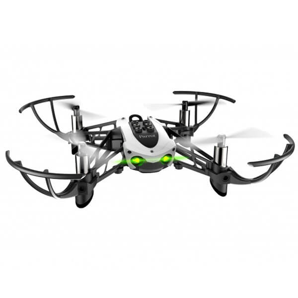
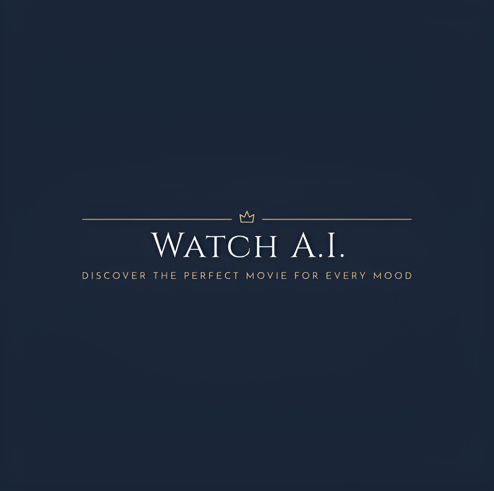
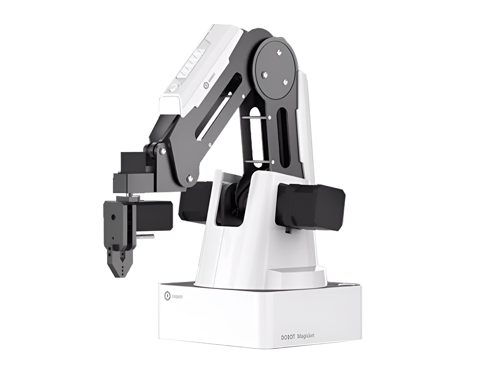
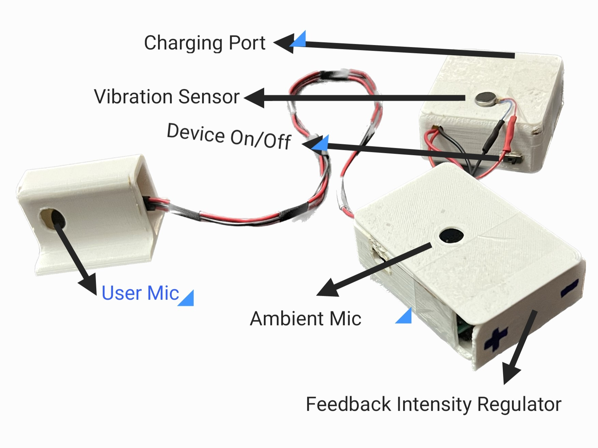
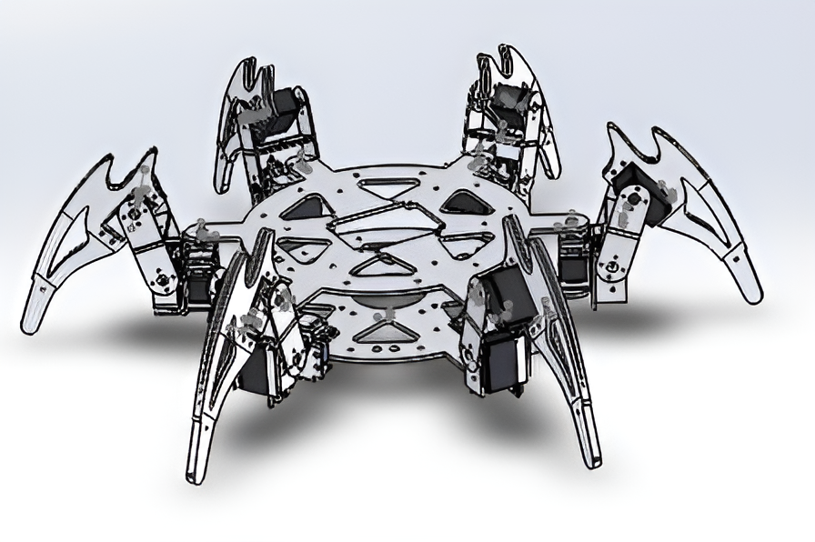
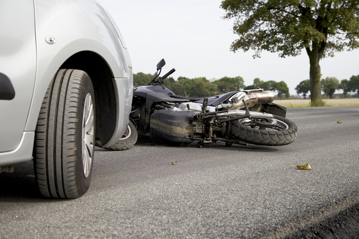
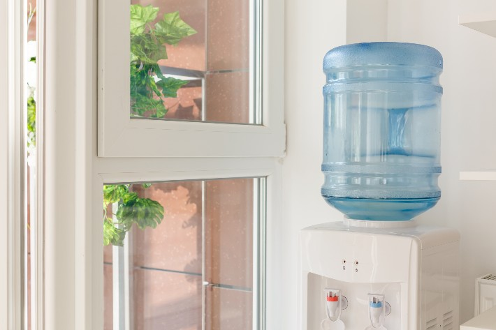
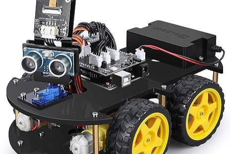

Parrot Mambo (mini drone) projects
The Parrot Mambo-Mini drone is a compact and agile aerial device that offers impressive flight performance and nimble maneuverability. It's perfect for beginners and enthusiasts alike, featuring user-friendly controls and a robust design. Whether you're learning to pilot a drone or looking for some aerial fun, the Mambo-Mini has you covered with its playful features, including cannon and grabber accessories.

Movie Recommendation App Based on Emotion
In this project, I've created a unique entertainment experience combining emotion detection and movie recommendations. Using facial expression analysis with the FER2013 dataset and ferNet.h5 model, I accurately predict emotions, offering tailored movie recommendations based on the user's feelings. Additionally, my content-based recommendation system suggests similar movies based on plot and content. This project highlights the power of machine learning in enhancing personalized entertainment choices.
Predict the rating for a User / Item pair using Jaccard Similarity
In my project, I aimed to predict future user book ratings using machine learning techniques, including Linear Regression, Logistic Regression, Bag of Words, and Jaccard Similarity. I conducted data exploration, encoded IDs, and implemented these methods for rating predictions based on previous ratings and reviews. Jaccard Similarity outperformed Bag of Words, offering a more accurate prediction with a lower Mean Square Error (MSE) of 1.837. This project showcases the potential of machine learning in recommendation systems and predictive analytics.

Dobot Projects
In these Dobot projects, I utilized the Dobot robotic arm for diverse automation tasks, including teaching it to write "CIM," implementing a pick and place system, and designing a picking, stacking, and destacking automation setup. These projects highlight the Dobot's versatility and precision in executing tasks such as writing, object manipulation, and complex stacking, demonstrating its potential across various automation applications.

Biofeedback Device for People with Parkinson's Disease
This project addresses Parkinson's disease-related speech impairments through a discreet vest housing a vibrotactile feedback system and microphones. The system, controlled by a Qt Py RP 2040 microcontroller, monitors vocal intensity and ambient noise, offering users real-time feedback for self-regulation during speech exercises. Our user-friendly, adaptable design aims to enhance the quality of life for individuals with Parkinson's and neuro vocal disorders.

Simulation for Forward and Inverse Kinematics of Hexapod
Embark on a journey with our team into the fascinating world of legged robots, drawing inspiration from nature's locomotion. Together, we explore the capabilities of a Hexapod robot with three degrees of freedom (DoF) legs. Our collaborative effort has yielded a robust visualization tool for Forward and Inverse Kinematics. This web application, boasting up to 95% precision, provides an immersive experience for simulating diverse gaits and monitoring real-time data on eighteen joint angles. Witness the future of robotics firsthand, all within your browser, thanks to our team's expertise in harnessing JavaScript's built-in Math object.

Intelligent Vehicle Accident Detection System
This project combines GPS-based vehicle tracking with swift accident response. By utilizing a gyroscopic sensor, GPS, and GSM module, it detects accidents, sends precise alerts, and enhances safety standards. Our innovation aims to transition from a prototype to real-world application, serving as a lifeline in perilous situations and countering vehicle thefts. This system holds the potential to expedite rescue operations, contributing to faster emergency response times in our daily lives.

The Automatic Refill Notification System
The Automatic Refill Notification System is designed to enhance the efficiency of bubble-top water dispensers. By utilizing a water level sensor and a GSM module, the system can promptly notify maintenance staff about the dispenser's status and location, ensuring timely refills. This innovative solution has demonstrated a significant reduction in refill response time, resulting in improved overall efficiency and customer satisfaction.

Bluetooth Controlled RC Car
Embarking on an exhilarating journey into the realm of mechatronics and robotics, I proudly unveil my inaugural creation – a captivating Bluetooth-powered RC car. Crafted with ingenuity, this marvel comes to life through the harmonious dance of an Arduino Uno, a dynamic motor driver, a futuristic Bluetooth module, and the spirited presence of four agile DC motors. It marks the dawn of my foray into a world where technology and innovation fuse seamlessly, setting the stage for a future electrified with boundless possibilities.

"Didn't spot my certifications? No worries! Just click the ☰ three lines in the top left corner to unveil my credentials. Your curiosity is always welcomed here!"
.png)